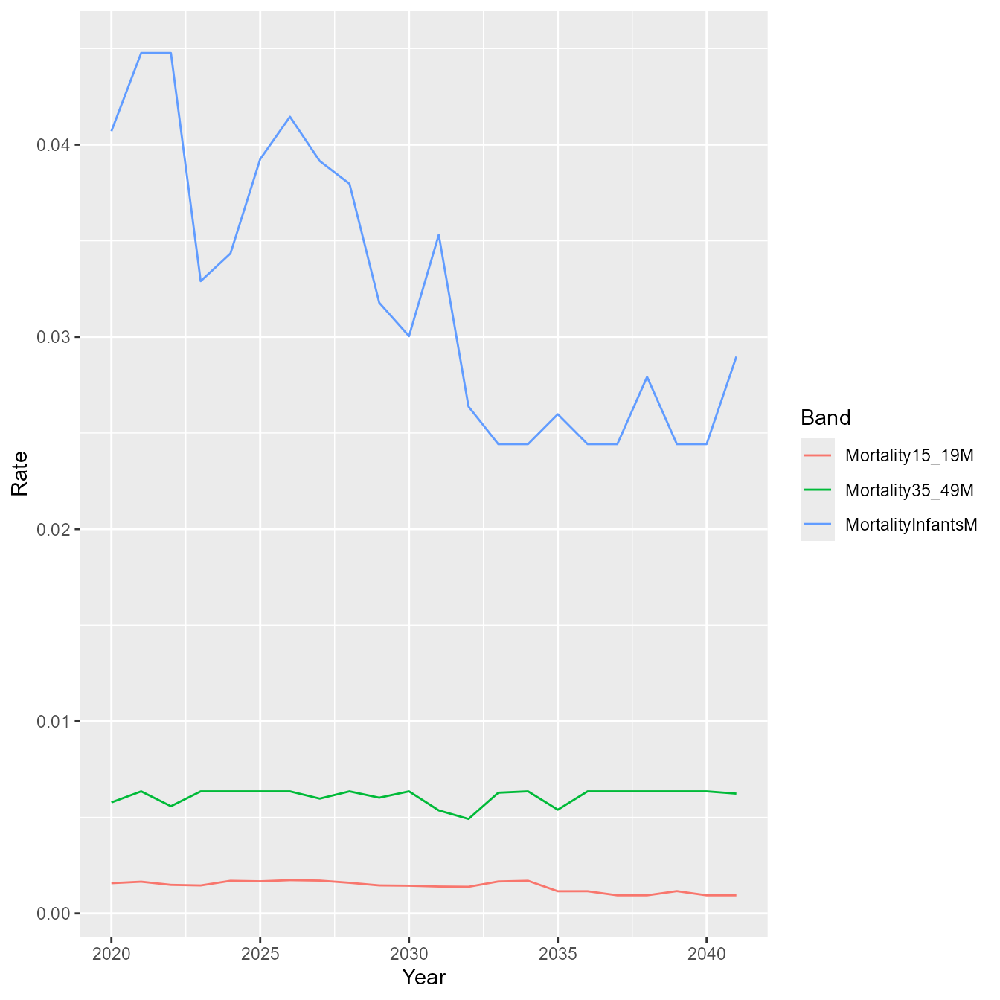

The results structure
Charles Eliot
2022-10-06
results-struct.RmdThe script for a typical run of the PACE-HRH modeling engine looks like this:
library(pacehrh)
pacehrh::InitializePopulation()
pacehrh::InitializeScenarios()
pacehrh::InitializeStochasticParameters()
pacehrh::InitializeSeasonality()
scenario <- "MergedModel"
pacehrh::SetGlobalStartEndYears(2020, 2040)
results <-
pacehrh::RunExperiments(scenarioName = scenario,
trials = 10)In this note we describe the contents of the results data
structure returned by RunExperiments().
Structure
The results (plural) structure is an R list consisting of multiple result (singular) structures, one per trial.
length(results)
## [1] 10Each result structure consists of the following parts:
- AnnualTimes
- AnnualCounts
- SeasonalityResults
- Population
- PopulationRates
names(results[[10]])
## [1] "AnnualTimes" "AnnualCounts" "SeasonalityResults"
## [4] "Population" "PopulationRates"Overview of the calculations
The PACE-HRH modeling engine computes the total amount of time required to perform healthcare tasks, based on population predictions.
- Step 1: Build population predictions for a range of years, based on shifting mortality and fertility rates.
- Step 2: For each combination of healthcare task and year, use information about the task - applicable population group, disease prevalence, time required per task event, number of events, etc - to determine the number of times a task is performed per year (“services”), and the total amount of time required for all services in a given year.
- Step 3: Apply data about the per-month seasonality of healthcare events to convert the annual data into per-month data. This calculation happens in two phases. In the first phase a seasonality curve is applied to the annual data, distributing the annual value according to the seasonality curve across the twelve months of the year. In the second phase, offset data is used to place events in the actual months they occur. An example of this is ante-natal care: a future birth generates ante-natal care tasks 1, 3, 5, and 7 months before the birth happens.
For each trial in a suite of trials, the parameters that feed the calculations are varied stochastically to generate confidence interval predictions.
AnnualTimes
AnnualTimes holds the results of the time-per-task-per-year values (in minutes) calculated in Step 2. The results are in the form of a matrix, with tasks along the row dimension and years along the columns.
dim(results[[10]]$AnnualTimes)
## [1] 135 22
rownames(results[[10]]$AnnualTimes)
## [1] "FH.MN.ANC.1" "FH.MN.PNC.7" "FH.MN.15" "FH.MN.17"
## [5] "FH.MN.18" "FH.MN.19A" "FH.MN.19B" "FH.MN.19C"
## [9] "FH.MN.19D" "FH.MN.23" "FH.MN.24" "FH.EPI.32A"
## [13] "FH.EPI.32B" "FH.EPI.32C" "FH.EPI.32D" "FH.EPI.33"
## [17] "FH.EPI.34" "FH.FP.38A" "FH.FP.38B" "FH.FP.38C"
## [21] "FH.FP.39" "FH.FP.42" "FH.FP.44" "FH.FP.48"
## [25] "FH.FP.50" "FH.FP.51" "FH.FP.58" "FH.FP.62"
## [29] "FH.Ntr.64" "FH.Ntr.65" "FH.Ntr.66" "FH.Ntr.67"
## [33] "FH.Ntr.77" "FH.Ntr.79" "FH.Ntr.80" "FH.Ntr.81"
## [37] "FH.Ntr.82" "FH.Ntr.83" "FH.Ntr.84" "DPC.STI.95"
## [41] "DPC.STI.99" "DPC.TB.108A" "DPC.TB.108B" "DPC.Cncr.117"
## [45] "DPC.Cncr.119A" "DPC.Cncr.119B" "DPC.Cncr.119C" "DPC.Cncr.119D"
## [49] "DPC.Cncr.119E" "DPC.Cncr.119F" "DPC.Cncr.119G" "DPC.Cncr.119H"
## [53] "DPC.Cncr.119I" "DPC.Cncr.119J" "DPC.Cncr.119K" "DPC.Hyp.120"
## [57] "DPC.Dbt.123" "DPC.Asth.126" "DPC.Asth.127" "DPC.MH.130B"
## [61] "DPC.MH.133" "DPC.MH.135" "DPC.Oph.136" "DPC.Oph.137"
## [65] "DPC.Oph.140" "DPC.NTD.157" "FH.MN.D.3" "FH.MN.D.5"
## [69] "FH.MN.D.4" "FH.MN.PNC.8" "FH.MN.ANC.2" "FH.Ntr.68"
## [73] "FH.MN.21A" "FH.MN.21" "FH.MN.22" "DPC.Mlr.103A"
## [77] "DPC.Mlr.103B" "DPC.Mlr.103C" "DPC.Mlr.104A" "DPC.Mlr.104B"
## [81] "FH.MN.S.12" "FH.MN.S.13" "FH.MN.S.14" "FH.MN.29"
## [85] "FH.MN.30" "FH.EPI.31" "FH.EPI.35" "FH.EPI.36"
## [89] "FH.EPI.37" "FH.FP.45" "FH.FP.47" "FH.FP.49"
## [93] "FH.FP.52" "FH.FP.53" "FH.FP.59" "FH.Ntr.70"
## [97] "FH.Ntr.71" "FH.Ntr.74" "FH.Ntr.75" "FH.Ntr.76"
## [101] "FH.Ntr.78" "FH.Ntr.85" "FH.Ntr.86" "DPC.Mlr.102"
## [105] "DPC.Mlr.105" "DPC.Mlr.106" "DPC.Mlr.107" "DPC.TB.110"
## [109] "DPC.Drug.112" "DPC.Drug.113" "DPC.Drug.114" "DPC.Cncr.115"
## [113] "DPC.MH.130A" "DPC.MH.131" "DPC.MH.132" "DPC.MH.134"
## [117] "DPC.NTD.156" "DPC.NTD.159" "DPC.NTD.160" "DPC.NTD.162"
## [121] "DPC.NTD.163" "DPC.NTD.164" "DPC.NTD.168" "DPC.NTD.169"
## [125] "DPC.NTD.171" "DPC.NTD.172" "DPC.NTD.175" "Record keeping"
## [129] "Travel_HEH" "Travel_HEP" "Test additional" "MHH_HEH"
## [133] "MHH_HEP" "Overhead_staff1" "Overhead_staff2"
colnames(results[[10]]$AnnualTimes)
## [1] "2020" "2021" "2022" "2023" "2024" "2025" "2026" "2027" "2028" "2029"
## [11] "2030" "2031" "2032" "2033" "2034" "2035" "2036" "2037" "2038" "2039"
## [21] "2040" "2041"
results[[10]]$AnnualTimes["FH.MN.ANC.1",]
## 2020 2021 2022 2023 2024 2025 2026 2027
## 6155.230 4853.162 5010.989 5168.815 5168.815 5129.359 5010.989 5405.555
## 2028 2029 2030 2031 2032 2033 2034 2035
## 5602.838 6115.774 6628.710 6234.143 6865.449 6628.710 7023.276 7023.276
## 2036 2037 2038 2039 2040 2041
## 7023.276 7260.015 7615.125 7733.494 7338.928 7575.668AnnualCounts
AnnualCounts reports the number of times per year a healthcare task is performed.
results[[10]]$AnnualCounts["FH.MN.ANC.1",]
## 2020 2021 2022 2023 2024 2025 2026 2027 2028 2029 2030 2031 2032 2033 2034 2035
## 624 492 508 524 524 520 508 548 568 620 672 632 696 672 712 712
## 2036 2037 2038 2039 2040 2041
## 712 736 772 784 744 768
# The pacehrh:::EXP environment holds working variables from the most recent trial.
# It's accessed here to illustrate how task time calculation are done.
print(pacehrh:::EXP$taskParameters@values["FH.MN.ANC.1",])
cat("\n")
print(pacehrh:::EXP$demographics[["2020"]]$Female + pacehrh:::EXP$demographics[["2020"]]$Male)
## StartingRateInPop RateMultiplier AnnualDeltaRatio NumContactsPerUnit
## 1.000000 1.000000 1.000000 4.000000
## NumContactsAnnual MinsPerContact HoursPerWeek FTEratio
## 0.000000 9.864151 0.000000 0.000000
##
## [1] 156 149 144 139 136 133 132 131 129 128 127 126 124 123 122 119 117 113
## [19] 109 103 98 92 88 86 84 83 81 79 76 72 67 63 59 57 57 55
## [37] 55 55 53 51 48 45 43 41 41 40 39 38 37 37 35 34 33 32
## [55] 31 31 30 29 28 26 24 23 21 20 19 19 18 17 16 15 14 13
## [73] 12 11 10 9 8 7 7 5 5 3 3 2 2 1 1 1 1 0
## [91] 0 0 0 0 0 0 0 0 0 0 0In this example (ante-natal task FH.MN.ANC.1), there are 156 births in 2020 in a total population of 5000, each of which generates 4 ante-natal care visits (NumContactsPerUnit), giving 624 total visits. Each visit is 9.8641511 minutes long, a value derived from a stochastic variation of the base value of 10, to give a total time of 6155.2302681 minutes.
SeasonalityResults
As described above, the system takes the annual times reported in AnnualTimes, applies a seasonality curve to distribute the annual times across the months of the year, then uses seasonality offsets to place the healthcare events in the correct months.
Sample calculation
The FH.MN.ANC.1 task uses the Births seasonality curve, and has four offsets representing ante-natal care visits 1, 3, 5 and 7 months before a birth.
pacehrh:::GPE$seasonalityOffsets[pacehrh:::GPE$seasonalityOffsets$Task == "FH.MN.ANC.1",]
## # A tibble: 1 × 9
## Task Description Curve Offset1 Offset2 Offset3 Offset4 Offset5 Offset6
## <chr> <chr> <chr> <dbl> <dbl> <dbl> <dbl> <lgl> <lgl>
## 1 FH.MN.ANC.1 ANC visits Births -7 -5 -3 -1 NA NAThe Births seasonality curve represents a normalized distribution (sum = 1) of the annual task time across the twelve months of the year.
pacehrh:::GPE$seasonalityCurves$Births
## [1] 0.07321502 0.08075936 0.09730372 0.08754257 0.07593332 0.06268636
## [7] 0.08631404 0.10510508 0.10273058 0.07135226 0.08005741 0.07700028Applying the Births seasonality curve to the annual value computed for 2020 gives the ante-natal visit time generated by births in a given month.
times2020 <- pacehrh:::GPE$seasonalityCurves$Births * results[[10]]$AnnualTimes["FH.MN.ANC.1","2020"]
print(times2020)
## [1] 450.6553 497.0925 598.9268 538.8447 467.3871 385.8490 531.2828 646.9460
## [9] 632.3304 439.1896 492.7718 473.9545However, the ante-natal care doesn’t happen in the month of the birth; it’s distributed across the months preceding the birth. Ante-natal care visits in January 2020 are generated by births that happen in February, April, June and August.
timeJan2020 <- (times2020[2] + times2020[4] + times2020[6] + times2020[8])/4
print(timeJan2020)
## [1] 517.183These times are then reported in SeasonalityResults. SeasonalityResults is structured as a list, one entry for each healthcare task. Each SeasonalityResults list entry is itself two lists, one of task times, and the other of task service counts.
results[[10]]$SeasonalityResults$FH.MN.ANC.1$Time
## [1] 517 558 503 531 486 503 488 488 432 422 398 404 408 440 396 419 384 419
## [19] 409 436 391 406 383 417 421 454 410 432 396 431 422 449 403 418 394 430
## [37] 434 469 422 447 409 443 432 457 409 422 398 430 434 469 422 447 409 443
## [55] 432 456 408 420 396 427 431 465 419 443 406 438 427 449 402 412 388 417
## [73] 421 454 410 432 396 436 427 460 413 433 408 450 454 490 441 466 427 466
## [91] 455 485 435 452 427 465 470 507 457 483 443 489 479 517 466 489 462 509
## [109] 515 554 500 527 484 532 522 561 506 530 501 551 557 600 541 572 524 560
## [127] 546 569 508 517 488 518 524 564 509 537 493 545 533 578 519 548 516 571
## [145] 576 621 560 592 542 583 568 596 533 546 515 551 557 600 541 572 524 574
## [163] 562 602 542 565 534 584 590 636 573 605 554 600 586 619 556 572 541 584
## [181] 590 636 573 605 554 600 586 619 556 572 541 584 590 636 573 605 554 605
## [199] 590 629 565 587 554 604 610 657 594 626 575 628 615 656 591 614 580 633
## [217] 640 689 622 656 601 654 638 678 607 629 592 644 649 700 631 667 611 654
## [235] 638 665 595 606 572 609 616 663 599 632 580 632 618 658 591 614 579 631Because the offsets for FH.MN.ANC.1 are negative, the time-series stops being reliable at the far end because the offset monthly values would have to be generated from un-calculated annual values beyond the range of the experiment. (In other words, to compute FH.MN.ANC.1 values for late 2040, the system needs to have calculated an annual value for 2041.)

Population
Every PACE-HRH trial is based on population predictions.Population stores the population data for the trial as a list with one entry for each year of the time-series.
names(results[[10]]$Population)
## [1] "2020" "2021" "2022" "2023" "2024" "2025" "2026" "2027" "2028" "2029"
## [11] "2030" "2031" "2032" "2033" "2034" "2035" "2036" "2037" "2038" "2039"
## [21] "2040" "2041"The entry for each year is a data frame consisting of the number of females and males per age group, and the relevant mortality and fertility rates used to compute the current year’s populations based on the previous year’s values (except the entry for the initial population, which doesn’t have the rates).
cat("2020 Population (initial)\n")
print(head(results[[10]]$Population[["2020"]]))
cat("\n")
cat("2021 Population\n")
print(head(results[[10]]$Population[["2021"]]))
cat("\n")
cat("2022 Population\n")
print(head(results[[10]]$Population[["2022"]]))
## 2020 Population (initial)
## Range Female Male
## 1 0 78 78
## 2 1 75 74
## 3 2 72 72
## 4 3 70 69
## 5 4 68 68
## 6 5 67 66
##
## 2021 Population
## Range Female Male rates.femaleFertility rates.maleFertility
## 1 0 61 62 0 0
## 2 1 78 78 0 0
## 3 2 75 74 0 0
## 4 3 72 72 0 0
## 5 4 70 69 0 0
## 6 5 68 68 0 0
## rates.femaleMortality rates.maleMortality
## 1 0.073283329 0.063786618
## 2 0.002465835 0.002476079
## 3 0.002465835 0.002476079
## 4 0.002465835 0.002476079
## 5 0.002465835 0.002476079
## 6 0.001123580 0.000990440
##
## 2022 Population
## Range Female Male rates.femaleFertility rates.maleFertility
## 1 0 64 63 0 0
## 2 1 61 62 0 0
## 3 2 78 78 0 0
## 4 3 75 74 0 0
## 5 4 72 72 0 0
## 6 5 70 69 0 0
## rates.femaleMortality rates.maleMortality
## 1 0.0698762268 0.080943502
## 2 0.0016243238 0.002318225
## 3 0.0016243238 0.002318225
## 4 0.0016243238 0.002318225
## 5 0.0016243238 0.002318225
## 6 0.0006954249 0.001148053Calculation details
The entry for each year is assumed to be an end-of-year snapshot of the population. To calculate the number of 5-year-olds at the end 2025 the system takes the number of 4-year-olds alive at the end of 2024, then applies the mortality rate for 5-year-olds in 2025 to compute how many lives are lost during the year. The number of new-borns (under 1 year old) at the end of 2025 is computed by applying the appropriate fertility rates to the numbers of women in each 2025 age group as calculated above, then applying the mortality rates for newborns.
PopulationRates
The PopulationRates data structure is quite complex because it reflects PACE-HRH’s support for user-defined banded rate structures.
The data structure is a list of four entries, one for each rate type.
names(results[[10]]$PopulationRates)
## [1] "femaleFertility" "maleFertility" "femaleMortality" "maleMortality"
names(results[[10]]$PopulationRates$femaleFertility)
## [1] "type" "sex" "prt" "fullRates" "bandedRates"
## [6] "ratesMatrix"- type : {“Mortality” | “Fertility”}
- sex : {“F” | “M”}
- prt : The Population Rates Table, read from the PACE-HRH input spreadsheet “PopValues” sheet. The PRT defines population bands, and the mortality or fertility rates that apply to those bands (InitValue). The PRT also defines a ChangeRate value for each band, which is the amount by which the rate changes each year. A value less than 1 says that the rate is declining from InitValue year over year.
- fullRates : The banded InitValue and ChangeRate vectors expanded to the full age range.
- bandedRates$breaks : The end ages for each rate band except the last one. In other words, the ages after which rates changes from one banded value to another.
- bandedRates$expansionMatrix : A matrix that can be used to convert a vector of rates from the banded format to the expanded format.
- bandedRates$initValues : Initial rate values. The InitValue column from the PRT.
- bandedRates$changeRates : Year-over-year change to rates. The ChangeRate column from the PRT.
bandedInitValues <- results[[10]]$PopulationRates$femaleFertility$bandedRates$initValues
print(bandedInitValues)
cat("\n")
print(results[[10]]$PopulationRates$femaleFertility$bandedRates$breaks)
cat("\n")
m <- results[[10]]$PopulationRates$femaleFertility$bandedRates$expansionMatrix
print(as.vector(m %*% bandedInitValues))
## [1] 0.000 0.042 0.157 0.195 0.144 0.118 0.046 0.027 0.000
##
## [1] 14 19 24 29 34 39 44 49
##
## [1] 0.000 0.000 0.000 0.000 0.000 0.000 0.000 0.000 0.000 0.000 0.000 0.000
## [13] 0.000 0.000 0.000 0.042 0.042 0.042 0.042 0.042 0.157 0.157 0.157 0.157
## [25] 0.157 0.195 0.195 0.195 0.195 0.195 0.144 0.144 0.144 0.144 0.144 0.118
## [37] 0.118 0.118 0.118 0.118 0.046 0.046 0.046 0.046 0.046 0.027 0.027 0.027
## [49] 0.027 0.027 0.000 0.000 0.000 0.000 0.000 0.000 0.000 0.000 0.000 0.000
## [61] 0.000 0.000 0.000 0.000 0.000 0.000 0.000 0.000 0.000 0.000 0.000 0.000
## [73] 0.000 0.000 0.000 0.000 0.000 0.000 0.000 0.000 0.000 0.000 0.000 0.000
## [85] 0.000 0.000 0.000 0.000 0.000 0.000 0.000 0.000 0.000 0.000 0.000 0.000
## [97] 0.000 0.000 0.000 0.000 0.000- ratesMatrix : Times-series for banded rates, with stochasticity applied.
library(ggplot2)
library(tidyr)
m <- results[[10]]$PopulationRates$maleMortality$ratesMatrix
df <- data.frame(Year = as.numeric(colnames(m)),
MortalityInfantsM = m["MortalityInfantsM",],
Mortality15_19M = m["Mortality15_19M",],
Mortality35_49M = m["Mortality35_49M",])
dff <- pivot_longer(df, c("MortalityInfantsM", "Mortality15_19M", "Mortality35_49M"),
names_to = "Band",
values_to = "Rate")
g <- ggplot(data = dff)
g <- g + geom_line(aes(x = Year, y = Rate, group = Band, color = Band))
g